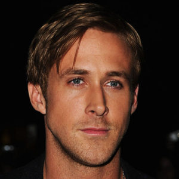
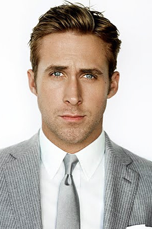
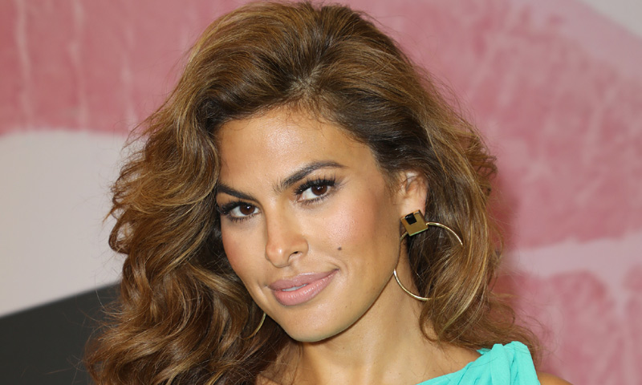

|  | Ryan Thomas Gosling (London, Ontario, 12 de noviembre de 1980) es un actor, director de cine, escritor y músico canadiense. Tuvo la atención del público como estrella infantil en Mickey Mouse Club de Disney Channel (desde 1993 hasta 1995) y apareció en otros programas de entretenimiento familiar incluyendo Are You Afraid of the Dark? (1995), Goosebumps (1996), Breaker High (1997-98) y Young Hercules (1998-99). Su primer papel importante en el cine fue en The believer (2001), y luego construyó una reputación por sus interpretaciones en películas independientes como Murder by numbers (2002), The Slaughter Rule (2002), The United States of Leland (2003) y Stay (2005). |
Tuvo atención pública en 2004 con un papel protagónico en The Notebook, por la que ganó cuatro Teen Choice Awards y un premio MTV Movie Award. Su actuación en Half Nelson (2006) estuvo nominada por un Premio a la Academia y su papel en Lars and the Real Girl (2007) estuvo nominada por el Globo de Oro. En 2007, protagonizó en la película de suspense Fracture. Después de una pausa de tres años, protagonizó Blue Valentine y All Good Things en 2010. Su actuación en esta última le valió una segunda nominación al Globo de Oro. El año 2011 resultó ser un año histórico para el actor ya que apareció en tres películas: Crazy, Stupid, Love, el thriller Drive y el drama político The Ides of March. En 2013, protagonizó el thriller Gangster Squad, el drama generacional The Place Beyond the Pines, y Only God Forgives. Debutó como director con Lost River, que fue estrenada en 2014.Su banda, Dead Man's Bones, lanzó su primer álbum en 2009. |
|  |
Vida privada Fue pareja de Sandra Bullock, a la que conoció en Murder by Numbers, entre 2002 y 2003.98 Después conoció a Rachel McAdams en el rodaje de The Notebook (2004) y el director declaró que «se odiaban». El propio Gosling confesó que «inspirábamos lo peor en cada uno». Fue una experiencia extraña: rodar una historia de amor y no llevarte bien con tu compañera. Dos años después nos encontramos en Nueva York y comenzamos a tener la idea de que, quizás, estábamos equivocados el uno con el otro. Ryan Gosling Iniciaron una relación en 2005 y un año más tarde un periodista preguntó por los planes de boda. La respuesta del actor canadiense fue clara: «pregúntale». Sin embargo, en 2008 la relación llegó a su fin. En el año 2011 inició una relación con Eva Mendes. En septiembre de 2014 tuvieron una hija llamada Esmeralda Amada. El 29 de abril de 2016 la pareja tuvo su segunda hija llamada Amada Lee. Ryan tiene un perro llamado George, al que rescató de una perrera en Los Ángeles.101 Tiene un tatuaje de The Giving Tree en su brazo izquierdo.102103 Dando apoyo a varias causas sociales, ha trabajado particularmente con el proyecto Enough, viajando en 2010 al este del Congo. Fue representante de Hollywood en la Conferencia Nacional de 2008, donde habló sobre Darfur. |
 |